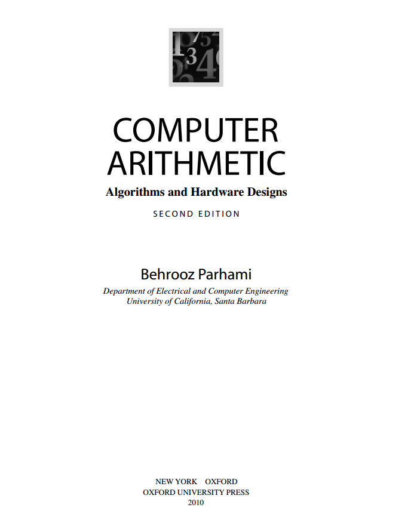

跳转至
计算机算术-算法与硬件实现
标题
正在初始化搜索引擎
jszheng/ComputerArithmetic
计算机算术-算法与硬件实现
jszheng/ComputerArithmetic
封面
标题
第一版序言
第二版序言
Part-I 数字的表示方法
Part-I 数字的表示方法
1. 数字与算术
2. 有符号数的表示
3. 冗余数系统
4 剩余数系统
Part-II 加法与减法
Part-II 加法与减法
5. 基础的加法与计数方案
6. 超前进位加法器
7. 其它高速加法器
8. 多操作数加法
Part-III 乘法
Part-III 乘法
9. 基础的乘法方案
10. 高基乘法器
11. 树型乘法器与阵列乘法器
12. 其它乘法器
Part-IV 除法
Part-IV 除法
13. 基础除法方案
14. 高基除法器
15. 其它除法器
16. 除法的收敛算法
Part-V 实数算数
Part-V 实数算数
17. 浮点数表示
18. 浮点数运算
19. 误差与误差控制
20. 精确可靠的算术
Part_VI 特殊函数求值
Part_VI 特殊函数求值
21. 平方根算法
22. CORDIC算法
23. 其它函数求值方法
24. 查表法算术
Part_VII 实现相关主题
Part_VII 实现相关主题
25. 高吞吐量算术
26. 低功耗算术
27. 容错算术
28. 可重构算术
附录
封底
Computer Arithmetic
¶
Algorithms and Hardware Designs
Second Edition
2010
by Behrooz Parhami
UCSB

回到页面顶部